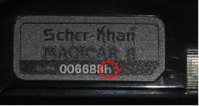

1. Если стоит SCHER-KHAN MAGICAR 6, можно приобрести на замену брелок от MAGICAR 5.
2. К Magicar 5 подойдет брелок Magicar 6, но не подойдет брелок Magicar 7. И даже для процессорного блока Magicar 5 подойдет брелок Magicar 6.
3. На Магикар 7 подойдет брелок от 8, но не будет отображаться успешное резервирование. Так же сначала нужно выяснить кодировку своего брелока.
В 2008 году в сигнализациях Scher-Khan Magicar 7 и 8 изменился алгоритм кодирования информации передаваемой брелоком в эфир. В результате этого брелоки в старой и в новой моделях стали несовместимы и не взаимозаменяемы. Для идентификации обновленных моделей сигнализации Scher-Khan Magicar 7 и 8, к серийному номеру брелока была добавлена литера « h ».

Поэтому, прежде чем программировать (заказывать, покупать) новый брелок для сигнализации Scher-Khan Magicar 7 или 8, определите (по серийному номеру брелока) какого поколения брелок подходит к Вашей сигнализации.